El día empezó a primera hora haciendo recados antes de irnos a Valencia. Tuvimos que alquilar una furgoneta para llevar todo el material. En la foto están Ricardo y Javier observando el panorama que se nos avecinaba.
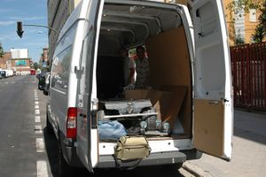
Al llegar a Valencia fuimos al Leroy Merlín a comprar 48m2 de pistas para velocistas y
un desodorante para Pichardo. Cómo debían estar en Campus para que nos llegase el SMS.
Ese día Andrés desayunó con Alejandro, el primero se iba a la cama y el segundo se despertaba ;-)
Ha sido el comienzo, primero una charla de Andrés sobre
Frikadas con la Wii, luego el
taller de Skybots
y finalmente el
taller de FlatBots. Entre medias mucho frikeo y emoción... a Yossua le han retado varios robots y
tenemos una pista de combate muy digna.
| 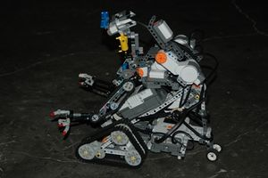
Robot para el concurso de Lego |
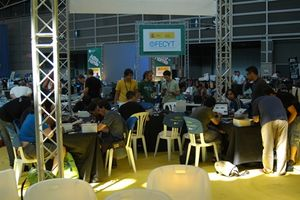
Taller Skybots |
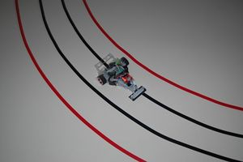
Concurso Velocistas |
Hoy Ricardo ha dado la charla "Hack the Toy" y hemos dado la tercera sesión del taller de Skybots.
Los Flatbots están construidos y listos para la sesión de mañana sobre seguimiento de objetos.
Andrés ha sido jurado de la prueba libre, la cual la ha ganado Galatea 2.0
Por la noche hemos empezado a reparar Yossua para el combate de mañana contra Tupperware
Sam ya se mueve con la PDA
| 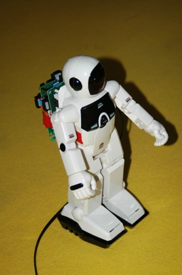
Robot para la conferencia "Hack the Toy" |
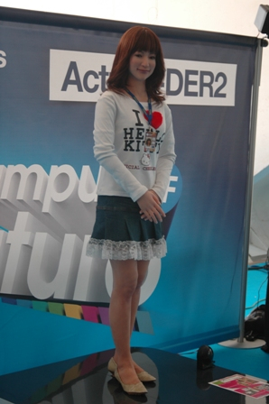
Robota parlanchina Actroid-DER2 |
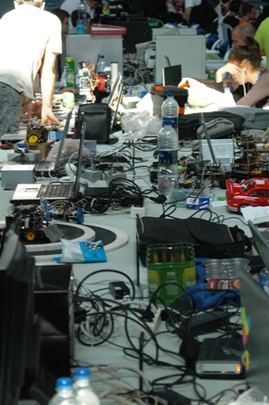
Mesas de CampusBot |
| 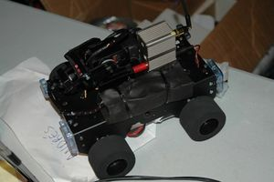
Nuevo Robot Yossua mejorado |
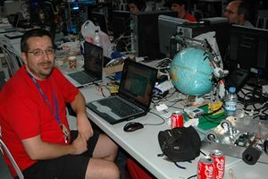
Furry y sus robots |
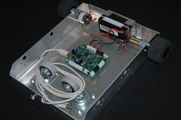
Montaje final de un FlatBot |
Se considera Victoria dejar inutilizado el robot, vale todo, es a muerte.
Yossua tres victorias, Tupperware dos victorias.
| 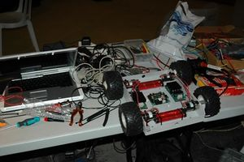
Nuevo Robot basado en FlatBot |
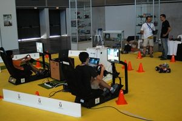
Aplicación de la Universidad Rey Juan Carlos |
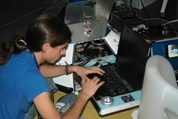
Ángel frikeando con SAM |
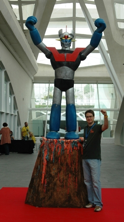
Desde las 10:00 de la mañana hasta las 20:30 hemos estado en el "Día de la Robótica". La exposición ha tenido mucho éxito ya que el pabellón estaba siempre lleno y con gente con ganas de aprender.
Los robots que se han visto:
Además se celebraron todas las finales de los concursos de robótica, digamos que fue un día intenso pero divertido.
En este video podéis ver el resumen:
<youtube>iduf7Dmz_tM|300|250</youtube>
Por la noche, después de recoger todo el recinto, nos dispusimos a Frikear en el último día de Campus. El estado al que llegaron algunos es digno de fotos.
y con esto hasta el año que viene.